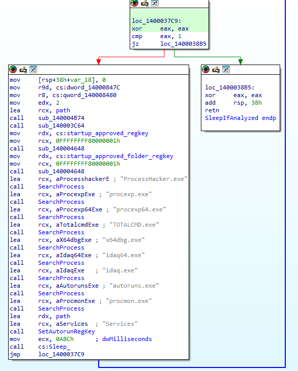

Redline Infostealer Analysis
Introduction
DISCLAIMER: while this is a malware analysis it is not to be confused with a full reverse engineering of the code as it is beyond the objective of building IoCs and malware behavioural and static signatures.
Redline is a malware family that has been active since 2012. It is a data stealer that is capable of exfiltrating sensitive information from the victim's machine. The malware is written in C++ and is often packed with a custom packer and loaded on the victim's machine through various loading and defense evasion mechanisms. The malware is capable of stealing sensitive information such as credentials, cookies, and browser history. The malware is also capable of taking screenshots of the victim's machine.
First stage: Downloader
Basic static analysis
The sample under analysis (SHA1:d6ae1c5d0bf5d7784c775ee833ec63756c77bdae) is flagged as a generic Trojan Downloader by most AV suites or as Fareit by some of them. It is a EXE file built for x86-64 Windows systems. We first analyze its capabilities using capa. The output of the tool is shown below:
| md5 | ae81456496d974ac77aa11fcd2de8b0f |
|---|---|
| sha1 | d6ae1c5d0bf5d7784c775ee833ec63756c77bdae |
| sha256 | 81be001c01d1fae33deab1c542661e90f07be5ae168f8220415063d26cd578ca |
| analysis | static |
| os | windows |
| format | pe |
| arch | amd64 |
| path | C:/Users/User/Downloads/81be001c01d1fae33deab1c542661e90f07be5ae168f8220415063d26cd578ca.exe |
| ATT&CK Tactic | ATT&CK Technique |
|---|---|
| DEFENSE EVASION | Obfuscated Files or Information::Indicator Removal from Tools [T1027.005] |
| DISCOVERY | System Information Discovery [T1082] |
| EXECUTION | Shared Modules [T1129] |
| PERSISTENCE | Boot or Logon Autostart Execution::Registry Run Keys / Startup Folder [T1547.001] |
| MBC Objective | MBC Behavior |
|---|---|
| ANTI-STATIC ANALYSIS | Executable Code Obfuscation::Argument Obfuscation [B0032.020] |
| Executable Code Obfuscation::Stack Strings [B0032.017] | |
| COMMUNICATION | HTTP Communication [C0002] |
| HTTP Communication::Read Header [C0002.014] | |
| DISCOVERY | Analysis Tool Discovery::Process detection [B0013.001] |
| Code Discovery::Enumerate PE Sections [B0046.001] | |
| System Information Discovery [E1082] | |
| PERSISTENCE | Registry Run Keys / Startup Folder [F0012] |
| Capability | Namespace |
|---|---|
| reference analysis tools strings | anti-analysis |
| contain obfuscated stackstrings | anti-analysis/obfuscation/string/stackstring |
| reference HTTP User-Agent string | communication/http |
| check HTTP status code | communication/http/client |
| check OS version | host-interaction/os/version |
| link function at runtime on Windows | linking/runtime-linking |
| enumerate PE sections (2 matches) | load-code/pe |
| resolve function by parsing PE exports (2 matches) | load-code/pe |
| persist via Run registry key | persistence/registry/run |
We can see that it has some basic capabilities such as comunicate with a HTTP server as well as to establish persistence using the Registry run key as well to detect processes for Anti-Analysis purposes.
Next, we will analyze the strings of the sample using DetectItEasy. The output of the tool is shown below:

We can see that the sample contains strings relative to the aforementioned techniques, such as an URL for the C2 server to a dll named "bot.dll" (SHA1: 78bdad1cf98759ec9dbcc1888cdaa2f7fccfcdbc). Its IP - "176.113.115.149" - refers to a server loacted in Russia. The process names of famous analysis tools such as x64dbg and Process Hacker are also present, presumably to evade analysis. It also makes use the registry run key to achieve persistence. Additionally, it mentions explorer.exe probably to achieve process injection. Finally, the use of reflection to load the malware is also probably exploited.
The PE of the executable contains six sections beside the Header and the entropy measurement indicates that none of them are packed. The sample was compiled with Microsoft Visual C/C++ (17.00.50727) [C++], linked with Microsoft Linker (11.00.50727) and written using Visual Studio 2012.
Basic dynamic analysis
Next, we analyze the sample by running it in a controlled environment. We use Process Monitor to monitor the file system, registry, and, with also Wireshark, network activity of the sample. To analyse the sample, it's anti-analysis functions were patched so to not detect the analysis tools. The output of the tool is shown below:


After this, the malware relaunches itself as "msiexec.exe" after setting environment variables. Also it downloads a .exe file with a temp name to %AppData%.
Then a whole suite of malicious executables are downloaded and executed on the system. In particular the following .exe are downloaded
While an in depth analysis for each of these files was not carried, it can be said that each has a set of exported functions or internal routines that aim to steal data in different ways, including scanning user folders, capturing screenshots, injecting web pages, and stealing cookie. Each of these executables has capabilities to send data to the C2 server independently.
We observe evidence of that in the Procmon logs, which indicates that one of these samples collected screenshots and builded in its install path - %ProgramData% - a set of folders regarding famous programs of various categories (including FTP clients, and Messaging apps) and then packed the logs to a .zip file and then uploaded it.
.png)
.png)
Advanced static analysis
Next, we analyze the sample using IDA Pro. For convinience, we shall rename all crucial functions and variables once their role in the execution has been determined. The malware exports the usual start function.
The first called function dynamically imports a long list of functions from various system lybraries and creates a referene to them. The most effective way to reverse engineer this program is to rename those functions thus making it clearer their purposes throughout the program. By doing this properly the analysis tool is also helped in its task of identifying common function signatures. In this function, also three registry keys are present that refer to startup programs.
The malware also checks for the presence of debuggers and exits in that case.
After enabling all the privileges for itself, the malware proceeds with the download of the malicious DLL. In particular, it downloads the malicious DLL from one of the C2 IPs to its process heap and then injects the explorer process with it.
After the injection, the malware checks if it has been launched as "msiexec.exe", if so it checks if the mutex "worker_VznLpbPuTg" is set, if it isn't it exits the process. It is worth to point that the use of the mutex isn't to make sure that only one instance of the malware is running, but rather it is probably used to check for the presence of other pieces of software. After that, it creates a thread that creates an exe file by using the (hashed) volume serial number and, checks for the presence of analysis software like Process Hacker and x64dbg, adds the .exe to an autorun key ("Software\\Microsoft\\Windows\\CurrentVersion\\Run") for future execution and sleeps the process if analysis softwares are found. Meanwhile, another thread attempts to download and inject the DLL again, this time with the "Diamotrixes" mutex
If the malware has a different name, it will move its file similarly to how mentioned before.
Then, it checks if the operating system version is Windows 7 or earlier. If a mutex "GqgWzd" isn't set it exits the process.
Finally, it sets a series of environment variables (msiexec.exe, audiodg.exe, svchost.exe) to point to the current path of the malware module. Then it uses process hollowing to launch one (the first successfully set) executable pointed by the environment variables and uses ntdll to perform process hollowing by using "NtUnmapViewOfSection","ZwQueryVirtualMemory", and "WriteProcessMemory"
.png)
.png)
This marks the last function of the malware downloader which then exits.
Second stage: Bot
The downlaoder downloads a DLL file named "bot.dll" (SHA1: 78bdad1cf98759ec9dbcc1888cdaa2f7fccfcdbc). Again, we analyze its general capabilities using capa.| md5 | 245749553e7194636b0f78e7dea115ef |
|---|---|
| sha1 | 78bdad1cf98759ec9dbcc1888cdaa2f7fccfcdbc |
| sha256 | 4b7e4232fec31a80cdccada106516e45a38d97ae18fbba586d4bec41c0bad823 |
| analysis | static |
| os | windows |
| format | pe |
| arch | amd64 |
| path | C:/Users/User/Downloads/bot.dll |
| ATT&CK Tactic | ATT&CK Technique |
|---|---|
| COLLECTION | Archive Collected Data::Archive via Library [T1560.002] |
| DEFENSE EVASION | File and Directory Permissions Modification [T1222] |
| Obfuscated Files or Information [T1027] | |
| Obfuscated Files or Information::Indicator Removal from Tools [T1027.005] | |
| Process Injection::Process Hollowing [T1055.012] | |
| Process Injection::Thread Execution Hijacking [T1055.003] | |
| Reflective Code Loading [T1620] | |
| DISCOVERY | File and Directory Discovery [T1083] |
| Process Discovery [T1057] | |
| Software Discovery [T1518] | |
| System Information Discovery [T1082] | |
| EXECUTION | Shared Modules [T1129] |
| PRIVILEGE ESCALATION | Access Token Manipulation [T1134] |
| MBC Objective | MBC Behavior |
| ANTI-BEHAVIORAL ANALYSIS | Debugger Detection::Software Breakpoints [B0001.025] |
| ANTI-STATIC ANALYSIS | Executable Code Obfuscation::Argument Obfuscation [B0032.020] |
| Executable Code Obfuscation::Stack Strings [B0032.017] | |
| COMMAND AND CONTROL | C2 Communication::Receive Data [B0030.002] |
| C2 Communication::Send Data [B0030.001] | |
| COMMUNICATION | HTTP Communication [C0002] |
| HTTP Communication::Connect to Server [C0002.009] | |
| HTTP Communication::Create Request [C0002.012] | |
| HTTP Communication::Get Response [C0002.017] | |
| HTTP Communication::Open URL [C0002.004] | |
| HTTP Communication::Read Header [C0002.014] | |
| HTTP Communication::Send Request [C0002.003] | |
| DATA | Check String [C0019] |
| Compress Data [C0024] | |
| Encode Data::XOR [C0026.002] | |
| DEFENSE EVASION | Obfuscated Files or Information::Encoding-Standard Algorithm [E1027.m02] |
| DISCOVERY | File and Directory Discovery [E1083] |
| System Information Discovery [E1082] | |
| FILE SYSTEM | Create Directory [C0046] |
| Read File [C0051] | |
| Set File Attributes [C0050] | |
| Write File [C0052] | |
| MEMORY | Allocate Memory [C0007] |
| PROCESS | Check Mutex [C0043] |
| Create Mutex [C0042] | |
| Create Process [C0017] | |
| Create Process::Create Suspended Process [C0017.003] | |
| Create Thread [C0038] | |
| Enumerate Threads [C0064] | |
| Resume Thread [C0054] | |
| Suspend Thread [C0055] | |
| Terminate Process [C0018] |
| Capability | Namespace |
|---|---|
| check for software breakpoints (2 matches) | anti-analysis/anti-debugging/debugger-detection |
| contain obfuscated stackstrings | anti-analysis/obfuscation/string/stackstring |
| parse credit card information | collection/credit-card |
| receive data (2 matches) | communication |
| send data | communication |
| get HTTP content length | communication/http |
| reference HTTP User-Agent string (3 matches) | communication/http |
| check HTTP status code | communication/http/client |
| compress data via WinAPI | data-manipulation/compression |
| encode data using XOR | data-manipulation/encoding/xor |
| get Program Files directory | host-interaction/file-system |
| get common file path (3 matches) | host-interaction/file-system |
| create directory | host-interaction/file-system/create |
| check if file exists | host-interaction/file-system/exists |
| get file size | host-interaction/file-system/meta |
| set file attributes | host-interaction/file-system/meta |
| read file on Windows | host-interaction/file-system/read |
| write file on Windows | host-interaction/file-system/write |
| get disk information | host-interaction/hardware/storage |
| print debug messages | host-interaction/log/debug/write-event |
| check mutex | host-interaction/mutex |
| check mutex and exit | host-interaction/mutex |
| get system information on Windows (2 matches) | host-interaction/os/info |
| get process filename | host-interaction/process |
| create process on Windows | host-interaction/process/create |
| inject thread | host-interaction/process/inject |
| use process replacement | host-interaction/process/inject |
| enumerate processes (2 matches) | host-interaction/process/list |
| acquire debug privileges | host-interaction/process/modify |
| modify access privileges | host-interaction/process/modify |
| enumerate process modules | host-interaction/process/modules/list |
| terminate process | host-interaction/process/terminate |
| enumerate threads | host-interaction/thread/list |
| suspend thread | host-interaction/thread/suspend |
| access PEB ldr_data | linking/runtime-linking |
| link function at runtime on Windows (10 matches) | linking/runtime-linking |
| link many functions at runtime | linking/runtime-linking |
| resolve function by hash | linking/runtime-linking |
| linked against CPP standard library | linking/static |
| linked against CPP regex library | linking/static/cppregex |
| parse PE header | load-code/pe |
| resolve function by parsing PE exports (2 matches) | load-code/pe |
| spawn thread to RWX shellcode | load-code/shellcode |
Next, we analyze the file using DetectItEasy. The PE, according to the entropy measurement, is not packed. The bot uses the same building suite of the downloader.
The strings contained in the bot have various references to HTTP fields, and in general it is clear that is capable of building HTTP packets. This time, the IPs used to communicate with C2 are "176.113.115.149" and "185.81.68.156". We see reference to a "/data.php" web page and also some format strings. Additionally, we see a large JSON dictionary with a list of URLs and pieces of injected HTML that is used to steal data from web banking services. In one of the keys of the JSON "www.exchanger.ws" we see references to four crypto wallets in a piece of inline Javascript code:
That, presumably, replace the addresses during a transaction.
Advanced Static Analysis
Having observed its operations in the previous dynamic analysis, we move to the Advanced Static Analysis. The DLL exports one function: DllEntryPoint and ReflectiveLoader. While it is really complicated to reverse engineer code loaded using reflection, a really similar loader was found publicly available on GitHub ( https://gist.github.com/Niko10/debc459e267201b1ec44c485d2e408b0). Luckily, IDA Pro also detects a DllEntryPoint which is presumably the function called by the ReflectiveLoader.
We move to the DllMain called by the DllEntryPoint. Here we find once again a function that dynamically imports a bunch of functions and defines a set of strings. Interestingly enough, not all of them are used this time so it is possible to assume that more versions of this bot are available or that its functionalities have changed.
For the following analysis of the code we make us of the pseudocode recunstruction functionality provided by IDA Pro as the code is highly convoluted and complicated by presumably inlined regex functions and text manipulations. We detect the presence of four more crypto wallet addresses:
Additionally, the thread launching this function collects data from the user clipboard and then sets its content with the manipulated crypto addresses. It is unclear the role of these addresses and of the text copied from the user clipboard for the rest of the code. Presumably, this data is used later in one of the other malicious executables thus achieving modularity.

The next function once again downloads the bot DLL. Then, it copies the local installed browser executable and launches an internal process. While it is unclear what this exactly does, it can be assumed that it is used either to steal data using the JSON shown above or to send the data to the server using the browser's functionalities. Also a pipe is created to communicate with other malicious executables on the system.
Next, the malware registers the victim to the C2 server using hashed drive and operating system informations. Also, it performs a XOR encoding of the content. After that, the malware receives a list of pipe ('|') separated URLs from the C2 server. The URLs refer to the executables mentioned before. The malware then downloads and executes the executables.We move to another piece of code convoluted by numerous address manipulations and structures where the malware gets hold of the browser (Chromium-based or Firefox) DLL and access its .text area to obtain a pointer to an unclear function. We can however assume that this is related to sending user data to the C2 server as in one of the functions called in this section we find references to a global variable which contains user data sent to the C2 server with a POST request to the ./data.php URL. The request is created with a format string "report=%s,%s,%d" where the first parameter is "C" if the browser is Chrome, "h" if is Firefox. The second parameter is a global variable that we assume is related to user data, while the third is data stolen using injected HTML from the browser.
We conclude the analysis by focussing on how the malware steals data from the web browser. Previously we mentioned that the malware uses the browser DLL, by manipulating its ".text" area for unclear purposes. While the exact functioning is not clear we can assume that this is done to inject the web content contained in the JSON dictionary mentioned before. In fact, in this section we find references to the fields of that dictionary.
Conclusions
In conclusion, this malware is a sophisticated and modular threat, designed to download and execute additional malicious payloads. It can steal sensitive data from the user’s clipboard and web browser, transmitting the stolen information to a command-and-control (C2) server. Additionally, it communicates with other malicious executables on the system, enhancing its functionality. The malware is equipped with advanced evasion techniques, allowing it to detect and hide from analysis tools. It also establishes persistence on the system, ensuring long-term control. Furthermore, it employs techniques like process injection and process hollowing to execute malicious code stealthily. As IoCs, the malware provides both IPs, crypto addreesses, and various strings for mutexes and so on. In any case, most of the IoCs can be considered at most annoying in the Pyramid of Pain [D. J Bianco 2013] so any signature related to these artifacts can easily be modified thus requiring continous maintainance of such signatures by AVs vendors. Additionally, this kind of malware are often sold on the dark-web as MaaS (Malware as a Service), so these kind of IoCs are expected to change from client to client. The best way to counter this malware lies in behavioural protection such as SIGMA rules. In fact, it is more effective to enforce rules for some of the techniques used by the malware such as Process Hollowing, Process Injection, Privileges Excalation, and the use of the browser DLLs.